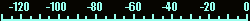

Your browser is not supported; if it does not work, please try again with Firefox on Android, or Safari version 6 or later on iOS.
USB
LSB
CW
AM
FM
RADEL
RADEU

Signal:
?
dBm – Peak:
?
dBm
<<<
<<
<
>|<
>
>>
>>>
mute
squelch
notch
notch 2
zoom −
zoom +
Memories:
store
delete
label
Settings:
restart audio
Stop waterfall (reduces network and processor load)
Show S-meter
Auto waterfall brightness
Weak-signal AGC
More playback buffering
Web Version